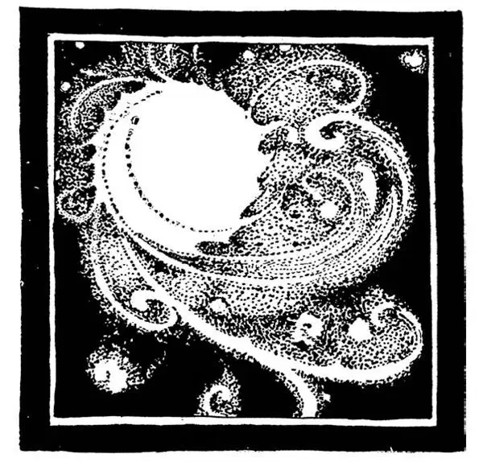
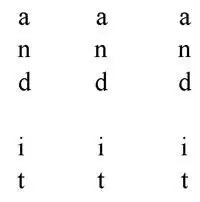
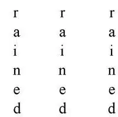
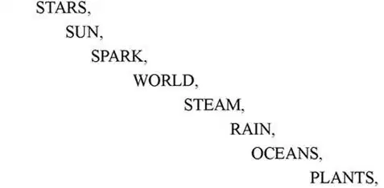
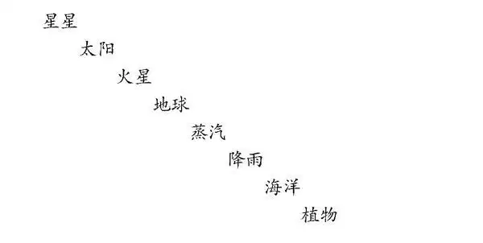

01
How Things Started
万物起源

ONCE upon a time there was a boy——
Just like me.
He had to stay in bed in the morning until seven o'clock until his family was ready to get up.
So did I.
As he was always awake long before this time, he used to lie there and think about all sorts of curious things.
So did I.
One thing he used to wonder was this:
What would the world be like if there were—
No fathers and mothers,
No uncles and aunts,
No cousins or other children to play with,
No people at all, except himself in the whole world!
Perhaps you have wondered the same thing.
So did I.
At last he used to get so lonely, just from thinking how dreadful such a world would be, that he could stand it no longer and would run to his parents' room and jump into bed by their side just to get this terrible thought out of his mind.
So did I——for I was the boy.
Well, there was
a time long, long, long ago when there were no men or women or children, NO PEOPLE of any kind, in the whole world. Of course there were no houses, for there was no one to build them or to live in them, no towns or cities—nothing that people make. There were just animals— mastodons and dinosaurs, birds and butterflies, frogs and snakes, turtles and fish. Can you think of such a world as that?
Then,
long, long, long,
before that, there was a time when there were NO PEOPLE, and NO ANIMALS of any sort in the whole world; there were just growing plants. Can you think of such a world as that?
Then,
long, long, long,
long, long, long,
before that, there was a time when there were NO PEOPLE, NO ANIMALS, NO PLANTS, in the whole world; there was just bare rock and water everywhere. Can you think of such a world as that?
Then,
long, long, long,
long, long, long—you might
keep on saying—
“long, long, long,” all day, and
tomorrow, and all
next week, and next
month, and next
year, and it would
not be long enough—
before this, there was a time when there was NO WORLD AT ALL!
No world at all! Only the stars, and God, who made the stars.
Now, real stars are not things with points like those in the corner of a flag or the gold ones you put on a Christmas tree. The real stars in the sky have no points. They are huge burning balls of fire——balls of fire. Each star, however, is so huge that there is nothing in the world now anywhere nearly as big. One little bit, one little scrap of a star is bigger than our whole world—than our whole world.
One of these stars is our sun—yes, our sun. The other stars would look the same as the sun if we could get as close to them. But at that time, so long, long ago, our sun was not just a big, round, white, hot ball as we see it in the sky today. It was then more like the fireworks you may have seen on the Fourth of July. It was whirling and sputtering and throwing off sparks.
One of these sparks, which the sun threw far off, got cool just as a spark from a crackling log in a fireplace gets cool, and this cooled off spark was—
What do you suppose?
See if you can guess—
It was our world!—yes, the world
on which we now live.

The sun sputtering and throwing off sparks
太阳劈啪作响，喷射出点点火星
At first, however, our world, or Earth, was nothing but a ball of rock. This ball of rock was wrapped around with steam, like a heavy fog.
Then the steam turned to rain, and it rained on the world, until it had filled up the hollows and made enormously big puddles. These puddles were the oceans. The dry places were bare rock.


Then, after this, came the first living things——tiny plants that you could only have seen under a microscope. At first they grew only in the water, then along the water's edge, then out on the rock.
Then dirt, or soil, as people call it, formed all over the rock and made the rock into land, and the plants grew larger and spread farther over the land.
Then, after this, came the first tiny animals in the water. They were wee specks too small, like the first plants, to be seen without the help of a microscope.
Then, after this, in the water came larger animals like Jellyfish and clams and horseshoe crabs.
Then, after this, came Insects, some that live in the water, some on the water, some on the land, like cockroaches, and some in the air.
Then, after this, came Fish that live only in the water.
Then, after this, came animals like frogs called Amphibians that live in the water and also on the land.
Then, after this, came Reptiles, like snakes, turtles, lizards, and huge dinosaurs.
Then, after this, came Birds that lay eggs, and Mammals, like foxes and monkeys and cows, that nurse their babies when they are born.
Then, last of all, came—what do you suppose? Yes—People —men, women,and children.
Here are the steps; see if you can take them:

What do you suppose will be next?
【中文阅读】
从前，有个小男孩——就像曾经的我一样，每天早晨，他必须在床上捱到七点，等全家人都想起床了才能起来。
我曾经就这样。
因为老早就醒了，所以他常躺在那儿，思考着各种古怪的事情。
我也曾如此。
有件事他一直在思考，那就是：
没有爸爸、妈妈，
没有叔叔、婶婶，
也没有表兄弟、一起玩的孩子，
除了他自己，世界上什么人也没有，
那么，这个世界会是什么样儿呢？
或许你也想过同样的事。
我曾经就思考过。
就因为想到这样的世界如此可怕，他会感到非常孤独，最后孤独到实在无法忍受了，他就会跑到爸妈的房间，蹦上床，靠在他们身边，以此将可怕的想法赶出他的头脑。
我曾经就这样——因为我就是那个小男孩。
在很久、很久、很久以前，那时没有男人、女人和孩子，世界上什么人也没有。当然更没有房子了，因为既没有人建造它，也没人在里面居住。没有镇子，没有城市——现在人建造的东西那时一样也没有。只有动物——乳齿象和恐龙，鸟类和蝴蝶，青蛙和蛇，乌龟和鱼类，等等。你能想象出那样的世界吗？
比这更早、更早、更早以前的时候，
世界上没有人，也没有动物，只生长着各种各样的植物。你能想象出那样的世界吗？
可是，
比这更早、更早、更早、
更早、更早、更早以前的时候，
世界上没有人，没有动物、没有植物，到处只有光秃秃的岩石和水。你能想象出那样的世界吗？
比这更早、
更早、更早、更早、
更早、更早、更早、
更早以前的时候——你可以
整天一直重复——
“更早、更早、更早”，
重复到明天、
下个星期、下个月、
甚至明年也说不完——
那时根本还没有世界！
根本还没有世界！只有星星和造星星的上帝。
真正的星星既不像国旗上带尖角的星星，也不像挂在圣诞树上金黄色的星星。天空中真正的星星没有尖角。它们是一个个巨大的燃烧着的火球——火球。但是，每个星星都那么巨大，巨大到我们地球上任何地方都没有东西可以和它们相比，每个星星上的一小点、一小片比我们的整个地球都大——大过我们的整个地球。
其中的一颗星星就是我们的太阳——是的，我们的太阳。如果可以像靠近太阳那样靠近其他星星的话，我们就会发现，它们看上去和太阳一模一样。可是，在很久、很久以前，太阳并不像我们现在看到的那样是一个又圆又大、又刺眼又炙热的火球，那时它更像我们在七月四号国庆日看到的烟花，在空中一边旋转着，劈啪作响，一边喷射出点点火星。
其中的一点火星被喷到了很远的地方，逐渐冷却，就像从壁炉里劈啪作响的木头上爆出来的火星逐渐冷却下来一样。这颗逐渐冷却下来的火星——
你猜怎么着？
看看你可能猜出来——
今天生活的世界。
然而，开始，我们的世界，或者我们的地球只不过是一个岩石球。这个石球被浓雾般的蒸汽笼罩着。
然后，蒸汽变成了雨，滴落在地球上。
淅沥淅沥，
滴答滴答，
哗啦哗啦。
雨水注满了凹地，形成了巨大无比的“水坑”。这些水坑就是海洋，干燥的地方是光秃秃的岩石。
海洋形成后，出现了第一种生物——极微小的植物，小到你只能在显微镜下才看得见。开始，它们只生活在水里，紧接着又蔓生到水边，最后爬上了岩石。
随后，泥土或现在人所说的土壤，逐渐在整块岩石上形成，将岩石变成了土地，植物也越长越大，蔓延到陆地上更远的地方。
接下来，水里首次出现了极微小的动物，就像最先出现的植物一样，它们小到只有那么一点点，没有显微镜根本就看不见。
然后，接下来，水里出现了像水母、蛤蜊、鲎等较大的动物。
接下来，出现了昆虫，有些生活在水里，有些生活在水面上，有些生活在陆地上，比如蟑螂，有些则生活在空中。
接下来出现的则是只生活在水里的鱼类。
紧随其后出现的则是既生活在水里，也生活在陆地上的两栖动物，比如青蛙。
下一个出现的则是爬行动物，比如：蛇、海龟、蜥蜴、巨型恐龙等。
再接下来出现了下蛋的鸟类和像狐狸、猴子和牛这样的哺乳动物，它们则是将后代生下来后再哺乳。
最后，出现了——你猜是什么？是的——人类——男人、女人和孩子。下面列出了以上的顺序，看看你是否还能记得：

你觉得下面该出现什么了？